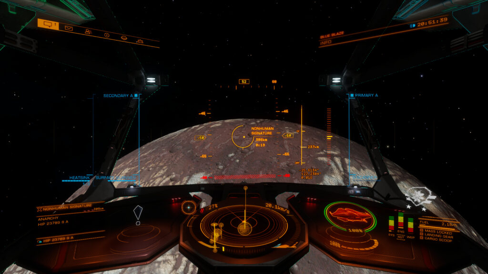

Nonhuman Signatures (not to be confused for Non-Human Signal Sources (NHSS)), are Points of Interest (POIs) that can spawn on any landable body (with or without an atmosphere) in a system, as long as that system contains an Ammonia-based-Life Gas Giant (ALGG).
It should be noted that it is occasionally incorrectly reported that Ammonia World’s and other bodies with an Ammonia Atmosphere can cause the Nonhuman Signatures to spawn, however there is currently no data to support that claim. The only other systems that were known to have Nonhuman Signatures appear, without an ALGG being present, were systems where a Titan was present.
These POIs can be detected from orbit, after fully scanning the planet with a Detailed Surface Scanner or getting close enough in supercruise. Note that some have reported a bug that requires the pilot to drop out of and re-enter supercruise after scanning to get the POIs (not just Nonhuman Signatures) to show on the navigation panel.

The Nonhuman Signature (NHS) POI is entirely consistent in regard to its content. The NHS will always contain a single damaged Thargoid Sensor with a few Sensor Fragment materials scattered around the Sensor itself. Unlike the usual consequence of interacting with Thargoid technology, remaining near the crashed Sensor or picking up the Sensor Fragment materials will not result in a Thargoid response, nothing will spawn in to try and stop you from taking them.
The Sensors found in Nonhuman Signatures are always in a damaged state and cannot be retrieved by cargo scooping them in the SRV, the only useful loot are the materials around the sensor. Additionally, the Nonhuman Signature point of interest is a transient occurrence, they are not fixed in any one location and so have no guaranteed spawning locations. They appear to be controlled by the BGS tick like other Elite Dangerous Odyssey added POIs.
Unlike Non-Human Signal Sources, which are mainly found in the Pleiades, Witch Head, Coalsack and California nebula, or other systems that the Thargoids are invading, Nonhuman Signatures can and have been found in any system that meets their requirements across the entire galaxy, as shown by our Bioforge tool.
Article and image credit to CMDR Firehawk894.